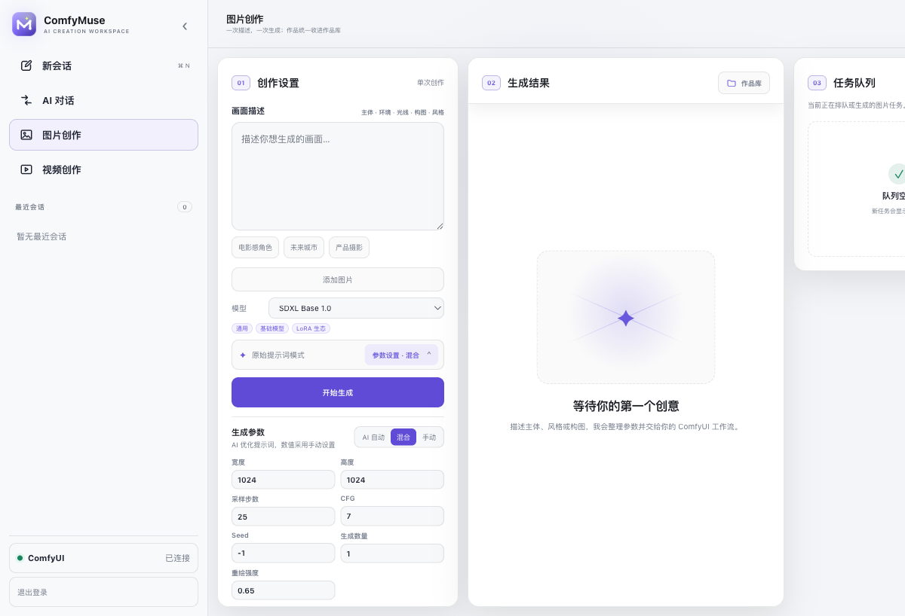
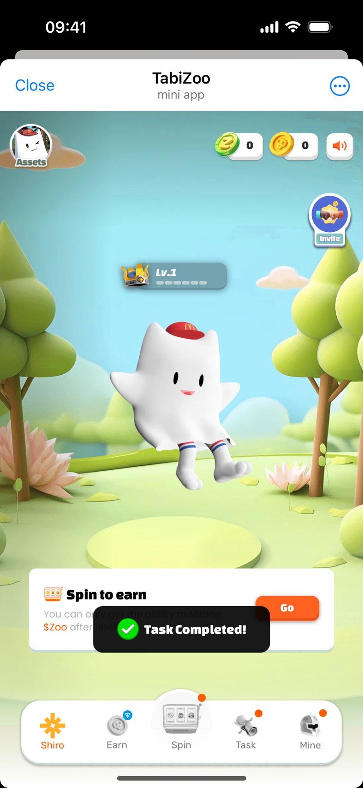
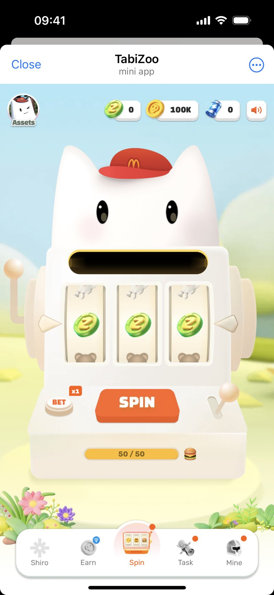

把复杂业务与技术，
做成真实可用的产品
我是王军东 Jax。11+ 年横跨产品工程、Web3 与 AI，既做产品判断，也进入交付现场，把模糊问题推进到可以验证的结果。
工程背景让我理解实现边界，复杂机制产品训练系统判断，AI 实践把需求、决策、交付与验证重新连接起来。
从工程实现，走到产品与机制设计
我从客户端工程和技术管理起步，后来进入钱包、DeFi、DAO、全链游戏与消费公链。不同阶段都在处理同一类问题：理解复杂技术，并把它变成用户可以使用、团队可以交付、结果可以验证的产品。
阅读公开履历横跨客户端工程、技术管理、产品管理与创业协作。
从 0 到 1 完成移动应用架构、功能开发、重构与优化。
覆盖钱包、公链、DeFi、GameFi、DAO 与多链账户体系。
连接需求理解、产品决策、交付验证与业务记忆。
三个案例，说明我如何工作
不只展示“做过什么”，也呈现问题、角色、关键判断、取舍与结果。




其余项目，保留在职业脉络里
它们共同构成从工程、钱包、DeFi、DAO，到 AI 与独立产品实验的能力路径。
跨所资金费率工具
面向永续合约研究场景的纯本地工具，把多交易所资金费率转换为可比较、可追溯的利差与结算视图。
- 我的工作
- 独立完成产品定义、5 家交易所数据接入、利差计算、趋势交互与异常降级。
- 公开状态
- 公开实验，支持逐笔结算、按日汇总和周期快照；查看 GitHub ↗
AI 产品分身
面向复杂业务的 AI 产品工作流实验，让 AI 不只生成内容，也参与有边界、可追溯的产品交付。
- 我的工作
- 串联需求准入、产品判断、研发拆解、验收、复盘与业务记忆。
- 当前重点
- 验证失败模式、评估标准、长期记忆和人机责任边界。
Cluster3
面向 DAO 的贡献与声誉数据产品，把分散的社区行为沉淀为可识别、可展示、可调用的成员资产。
- 我的工作
- 负责贡献评分、声誉管理、成就展示、开放 API 与多社区接入。
- 项目结果
- 覆盖 1200+ 社区、120 万用户地址；获万向黑客松第二名及 Nervos 特别奖。
CyberJourney
用微信小程序承接 NFT 的低门槛消费入口，并以配套玩法连接身份、资产与持续参与。
- 我的工作
- 推进小程序、NFT 发行与配套玩法上线，逐步补全产品生态。
- 项目结果
- 首期 NFT 上线后快速售罄，验证了从内容触达到资产转化的产品路径。
LuckTogether
开放式无损质押抽奖产品：用户保留本金，以储蓄协议收益形成奖励池，降低参与抽奖的损失预期。
- 我的工作
- 围绕储蓄协议、参与门槛、资金路径与社区治理设计完整模块。
- 交付重点
- 把质押、收益、抽奖和治理关系转译成用户可理解的参与路径。
HiWallet
多链钱包与资产管理产品，也是我从工程实现进一步走向完整产品设计的关键阶段。
- 我的工作
- 带领 6 人团队，覆盖多链资产、社交恢复、ERC-20 代付 Gas 与跨链体验。
- 能力迁移
- 从技术架构和交付责任，扩展到账户、资产与安全体验的产品判断。
我的优势不是一个岗位标签
而是把产品判断、技术理解和交付责任放在同一条链路上。
AI 产品化
不把 AI 停留在生成效果，而是继续处理模型、工作流、状态、评估、隐私和成本。
- ComfyUI Suite：本地工作流产品化
- AI 产品分身：需求到交付链路
- 能独立完成原型、实现与验收
复杂机制与平台
把账户、资产、激励、治理和生态关系，转译成用户路径与产品模块。
- TabiChain：消费公链与生态产品
- Cellula：全链生命周期与机制
- 钱包、DeFi、DAO 的连续经验
产品与工程一体化
既能定义目标与取舍，也能识别实现边界、异常状态和验收标准。
- 约 6 年工程与技术管理背景
- WJDStudyLibrary：372 Stars / 101 Forks ↗
- 跨产品、设计、研发推进交付
公开构建，是工程能力的长期记录
GitHub 保留了我把工程问题沉淀为模块与工具的长期记录，也为公开作品提供可以回读的代码入口。
从写代码，到设计系统，再到构建 AI 产品
我并非从“产品岗位”开始。客户端工程和技术管理让我理解产品如何被真正实现；Web3 让我长期面对账户、资产、激励与治理；现在，我把这些经验带进 AI 产品，继续处理复杂性与不确定性。
查看完整公开履历产品工程与架构
移动端架构、复杂应用交付与技术管理。
钱包与 DeFi 产品
从技术负责人走向产品，负责数字资产产品模块。
DAO 与全链产品
作为产品合伙人，负责架构、机制与跨团队落地。
消费公链与生态
负责账户体验、原生应用、生态入口、激励与治理。
AI 产品独立实践
探索需求理解、可信决策、交付验证与业务记忆。
现在，继续把判断做成产品
当前实践不是职业空档的装饰，而是持续验证新产品方法的现场。
ComfyUI Suite
围绕本地 AI 创作，持续完善工作流预设、模型管理、运行状态、历史记录和安全远程使用。
查看案例 ↗AI 产品分身
研究如何让 AI 进入需求准入、产品判断、研发拆解、验收与复盘，而不是只承担内容生成。
可信的 AI 交付闭环
下一步重点是失败模式、评估标准、长期记忆和人机责任边界。
如果你也在处理 复杂产品与 AI 落地
欢迎交流产品判断、AI 工作流、复杂机制设计和 0→1 交付，也开放合适的产品负责人、AI 产品与联合构建机会。